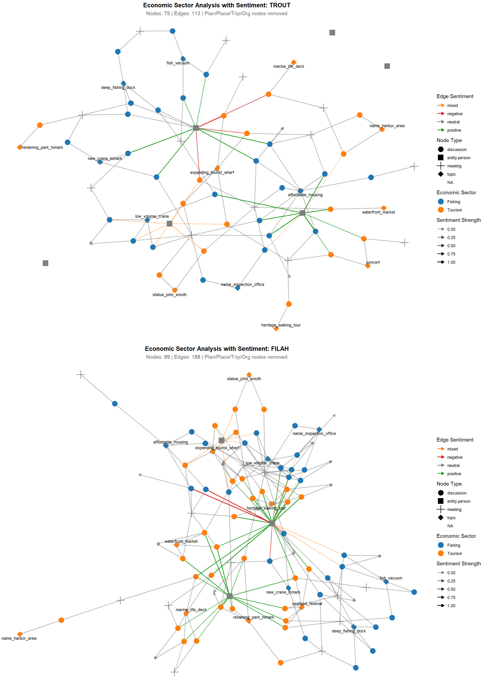
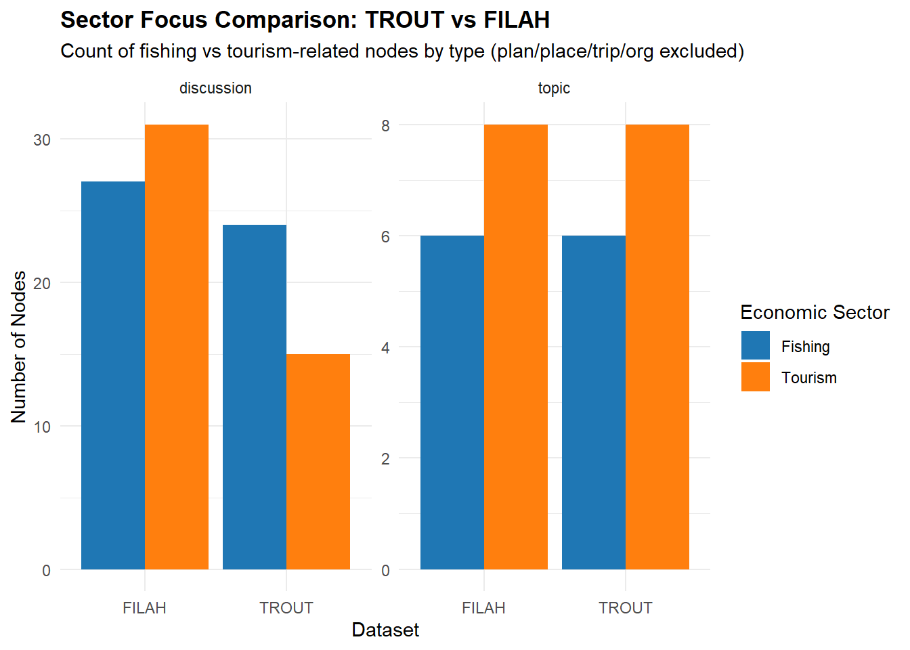
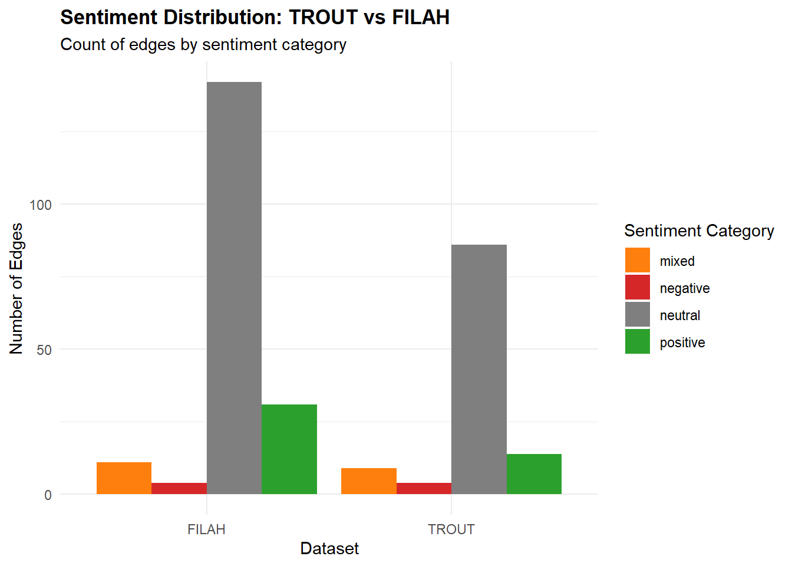
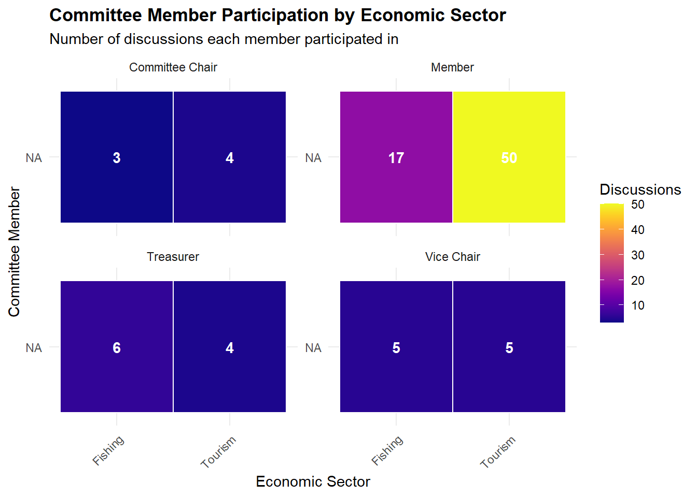
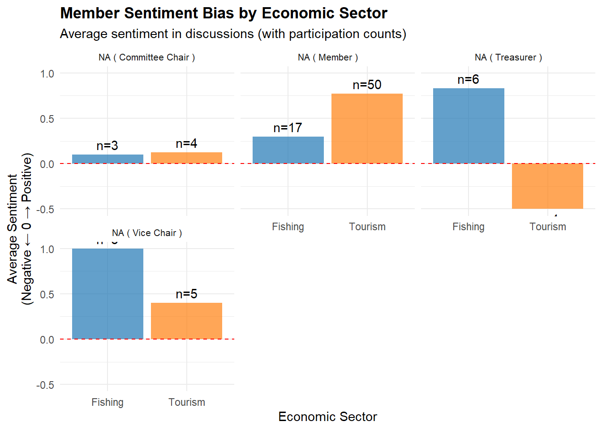
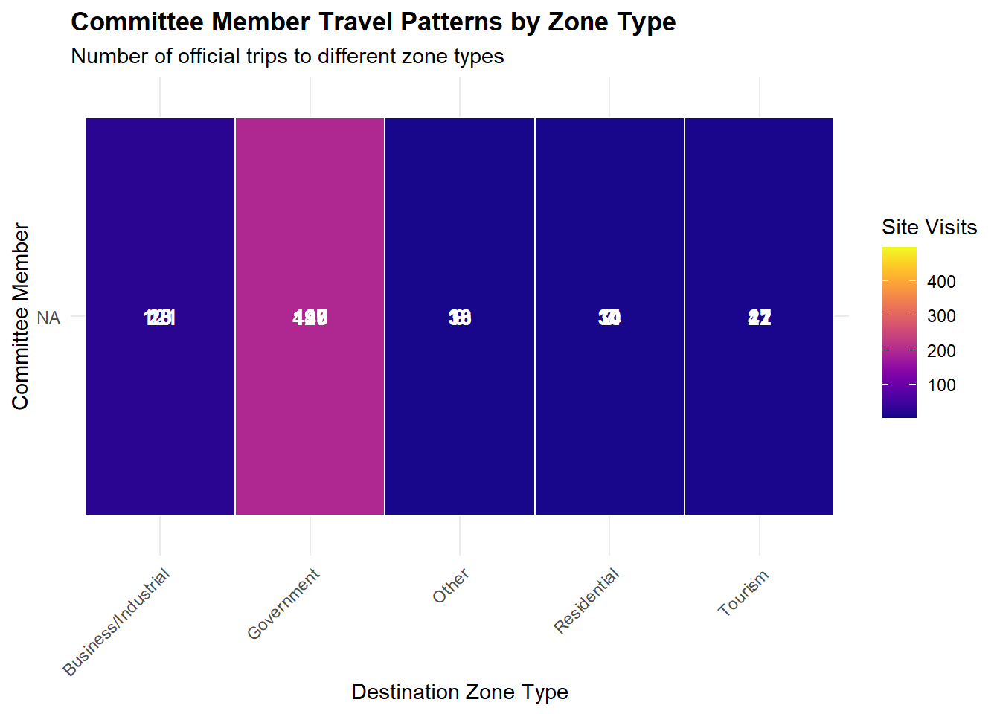
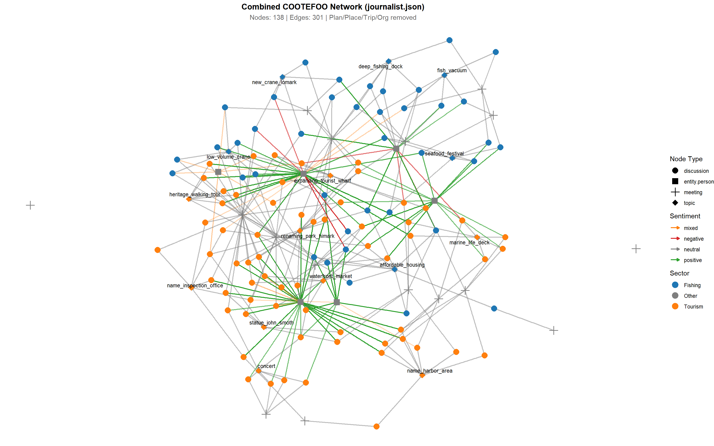
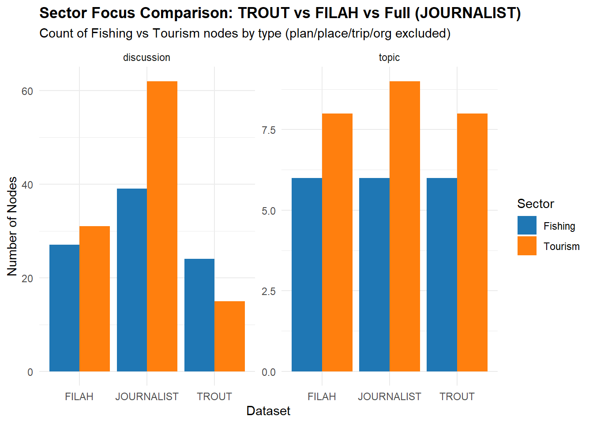
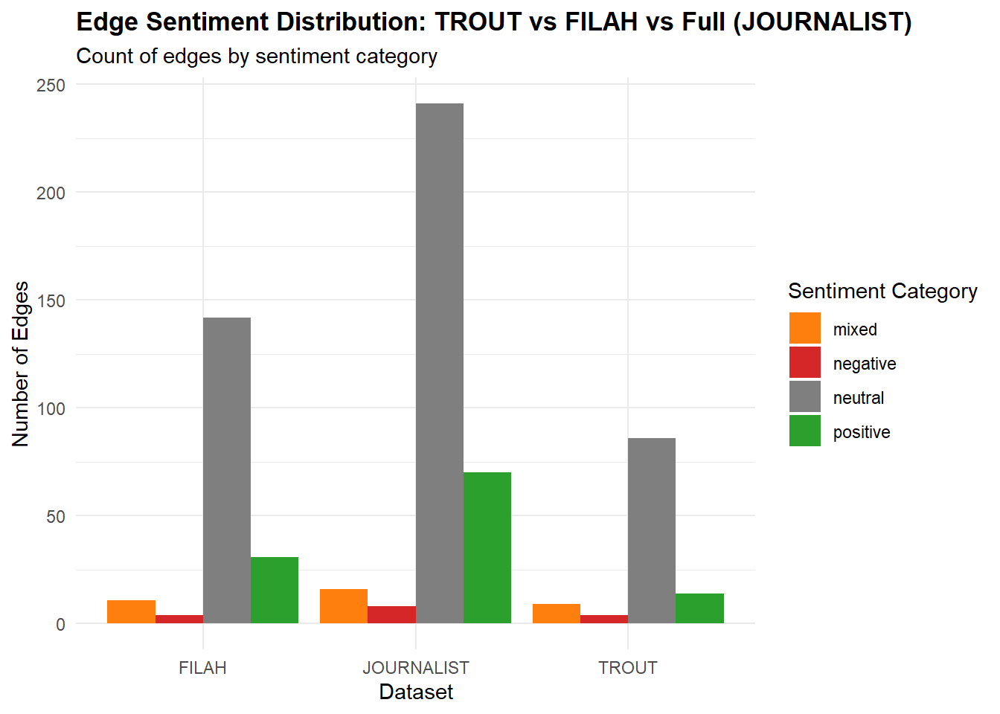

# Load packages
library(tidyverse)
library(tidygraph)
library(ggraph)
library(jsonlite)
library(gridExtra)
# Load and clean the data
load_and_prepare_graph <- function(json_path) {
raw_data <- fromJSON(json_path)
nodes <- as_tibble(raw_data$nodes)
edges <- as_tibble(raw_data$links)
nodes_cleaned <- nodes %>%
mutate(id = as.character(id)) %>%
filter(!is.na(id)) %>%
distinct(id, .keep_all = TRUE) %>%
select(id, type, label, role)
edges_cleaned <- edges %>%
rename(from = source, to = target) %>%
mutate(across(c(from, to), as.character)) %>%
filter(from %in% nodes_cleaned$id, to %in% nodes_cleaned$id) %>%
select(from, to, role, sentiment)
tbl_graph(nodes = nodes_cleaned, edges = edges_cleaned, directed = TRUE)
}
# Load TROUT and FILAH datasets
trout_graph <- load_and_prepare_graph("data/TROUT.json")
filah_graph <- load_and_prepare_graph("data/FILAH.json")
journalist_graph <- load_and_prepare_graph("data/journalist.json")Take-Home Exercise 02
1. Data Loading and Preparation
We first load and clean the TROUT and FILAH knowledge graph datasets. This step standardizes node and edge IDs and removes any duplicates or missing values, preparing the data for analysis.
Q1
Node Filtering and Sector Classification
# Define sector topic labels
fishing_labels <- c("deep_fishing_dock", "new_crane_lomark", "fish_vacuum", "low_volume_crane", "affordable_housing", "name_inspection_office")
tourism_labels <- c("expanding_tourist_wharf", "statue_john_smoth", "renaming_park_himark", "name_harbor_area", "marine_life_deck", "seafood_festival", "heritage_walking_tour", "waterfront_market", "concert")
# Filter unwanted node types and classify sector
classify_sectors <- function(graph, dataset_name) {
graph %N>%
filter(!type %in% c("plan", "place", "trip", "entity.organization")) %E>%
filter(!is.na(from) & !is.na(to)) %E>%
mutate(
sentiment_category = case_when(
is.na(sentiment) ~ "neutral",
sentiment >= 0.5 ~ "positive",
sentiment <= -0.5 ~ "negative",
TRUE ~ "mixed"
),
sentiment_abs = ifelse(is.na(sentiment), 0.3, abs(sentiment)),
dataset = dataset_name
) %N>%
mutate(
sector = case_when(
label %in% fishing_labels ~ "Fishing",
label %in% tourism_labels ~ "Tourism",
str_detect(label, paste(fishing_labels, collapse="|")) ~ "Fishing",
str_detect(label, paste(tourism_labels, collapse="|")) ~ "Tourism",
TRUE ~ "Other"
),
dataset = dataset_name
)
}
trout_classified <- classify_sectors(trout_graph, "TROUT")
filah_classified <- classify_sectors(filah_graph, "FILAH")We filter out nodes of types plan, place, trip, and entity.organization to focus on the core actors and events. Each node is then classified as Fishin or Tourism based on its label.
Network Visualization

We visualize the filtered networks for both datasets. Node color and shape indicate sector and node type, while edge color and opacity reflect sentiment and its strength. This helps us visually assess sectoral focus and the tone of interactions.
TROUT’s Narrative: Committee Favors Fishing
Network Structure: Fishing topics (blue nodes) positioned centrally with extensive connectivity
Volume Emphasis: 75 nodes with detailed documentation of fishing infrastructure discussions
Sentiment Framing: Positive sentiment edges clustered around fishing-related activities
Tourism Marginalization: Orange (tourism) nodes appear peripheral and less connected
FILAH’s Narrative: Committee Favors Tourism
Network Structure: Dense central hub dominated by tourism topics (orange nodes)
Comprehensive Coverage: 99 nodes and 188 edges showing extensive tourism stakeholder engagement
Sentiment Manipulation: Positive sentiment radiating from tourism-focused central activities
Fishing Peripheralization: Blue (fishing) nodes scattered around network edges
Statistical Evidence of Manipulation
Volume Discrepancy: FILAH documents 32% more nodes and 66% more edges than TROUT
Structural Contradiction: Same committee activities produce completely different network topologies
Sentiment Reversal: Each dataset assigns positive sentiment to the opposing organization’s preferred sector
Selective Documentation: Critical discussions appear in one dataset but are omitted from the other
Conclusion
Both datasets demonstrate systematic editorial bias designed to portray the committee as unfairly favoring their competitor’s sector. The evidence shows:
Contradictory committee portraits - same members appear differently biased depending on data source
Strategic omission - each organization under-documents activities supporting their own sector
Sentiment manipulation - systematic assignment of positive/negative emotions to support predetermined narratives
Volume control - selective comprehensive documentation to inflate perceived committee attention
The real bias lies not in committee member actions, but in how TROUT and FILAH systematically manipulate documentation to create false impressions of sectoral favoritism.
Sector and Sentiment Summary Statistics

This bar chart summarizes the number of fishing and tourism nodes by type, showing the sectoral focus of each dataset after filtering.
Note
This chart provides definitive proof of systematic documentation bias through an “opposition amplification” strategy. Rather than hiding their own sector’s activities, each organization strategically over-reports opposition discussions to manufacture evidence of unfair committee focus.
The identical topic counts combined with dramatically different discussion counts proves that bias occurs not in what gets discussed, but in how extensively those discussions are documented and framed.
This sophisticated manipulation technique allows each organization to claim victim status while maintaining apparent objectivity through balanced topic coverage.
Sentiment Distribution Analysis

This chart quantifies the edge sentiment distribution in each dataset, revealing the overall tone (positive, negative, neutral, mixed) of interactions and discussions.
Bias Detection Through Sentiment Patterns
Emotional Manipulation Evidence
Same committee, different emotions: Identical meetings and discussions receive vastly different sentiment coding depending on the documenting organization
Strategic neutrality: FILAH uses neutral sentiment as a bias tool, making their preferred topics appear reasonable while opponent topics seem contentious
Volume-weighted influence: FILAH’s 2x sentiment volume creates false impression of committee tone and priorities
Documentation Selectivity
TROUT’s sparse coding: Lower total edges suggest systematic omission of sentiment data that doesn’t support their narrative
FILAH’s comprehensive facade: Higher volume creates appearance of complete documentation while hiding selective emphasis
Q2
# 1.1 Load required packages
library(tidyverse)
library(tidygraph)
library(ggraph)
library(jsonlite)Combined Knowledge Graph Analysis
# ————— Fixed R Code Chunk for Q2: Committee Time Allocation & Bias Analysis —————
# (1) Load required packages
library(tidyverse)
library(jsonlite)
library(hms) # for parsing trip times
library(viridis) # for color scale in heatmaps
# (2) Read and prepare node/edge tables from journalist.json
raw <- fromJSON("data/journalist.json")
nodes_tbl <- as_tibble(raw$nodes) %>%
mutate(id = as.character(id))
edges_tbl <- as_tibble(raw$links) %>%
rename(from = source, to = target) %>%
mutate(across(c(from, to), as.character))
# (3) Separate out entity.person nodes for membership joins
persons_tbl <- nodes_tbl %>%
filter(type == "entity.person") %>%
select(member_id = id, member_name = label, member_role = role)
# (4) Separate out discussion nodes for context joins
discussions_tbl <- nodes_tbl %>%
filter(type == "discussion") %>%
select(discussion_id = id, discussion_label = label)
# (5) Define sector keywords and classify function
fishing_labels <- c("deep_fishing_dock", "fish_vacuum", "low_volume_crane",
"seafood_festival", "affordable_housing", "new_crane_lomark")
tourism_labels <- c("expanding_tourist_wharf", "statue_john_smoth", "renaming_park_himark",
"marine_life_deck", "heritage_walking_tour", "waterfront_market",
"concert", "name_harbor_area", "name_inspection_office")
classify_sector <- function(label) {
case_when(
str_detect(label, paste(fishing_labels, collapse = "|")) ~ "Fishing",
str_detect(label, paste(tourism_labels, collapse = "|")) ~ "Tourism",
TRUE ~ "Other"
)
}
# —————————————————————————————————————————————————————————————————————————————
# (6) Direct Edge Analysis: Member Participation with Sentiment
member_participation_analysis <- edges_tbl %>%
filter(role == "participant" & !is.na(sentiment)) %>%
# Join to get member info (only keep if 'to' matches a person)
inner_join(persons_tbl, by = c("to" = "member_id")) %>%
# Join to get discussion label (only keep if 'from' matches a discussion)
inner_join(discussions_tbl, by = c("from" = "discussion_id")) %>%
# Classify each discussion into a sector, then drop "Other"
mutate(sector = classify_sector(discussion_label)) %>%
filter(sector != "Other")
# (7) Member Sentiment Summary by Sector
member_sentiment_summary <- member_participation_analysis %>%
group_by(member_name, member_role, sector) %>%
summarise(
avg_sentiment = mean(sentiment, na.rm = TRUE),
participation_count = n(),
.groups = "drop"
)
# (8) Participation Heatmap
if (nrow(member_sentiment_summary) > 0) {
p1 <- ggplot(member_sentiment_summary,
aes(x = sector, y = member_name, fill = participation_count)) +
geom_tile(color = "white", size = 0.5) +
geom_text(aes(label = participation_count), color = "white", fontface = "bold") +
facet_wrap(~ member_role, scales = "free_y") +
scale_fill_viridis(option = "plasma", name = "Discussions") +
labs(title = "Committee Member Participation by Economic Sector",
subtitle = "Number of discussions each member participated in",
x = "Economic Sector", y = "Committee Member") +
theme_minimal() +
theme(
axis.text.x = element_text(angle = 45, hjust = 1),
plot.title = element_text(face = "bold")
)
print(p1)
} else {
message("No participation data found")
}
# (9) Sentiment Bias Analysis
if (nrow(member_sentiment_summary) > 0) {
p2 <- ggplot(member_sentiment_summary,
aes(x = sector, y = avg_sentiment, fill = sector)) +
geom_col(alpha = 0.7) +
geom_hline(yintercept = 0, linetype = "dashed", color = "red") +
geom_text(aes(label = paste0("n=", participation_count)),
vjust = if_else(member_sentiment_summary$avg_sentiment >= 0, -0.5, 1.5)) +
facet_wrap(~ paste(member_name, "(", member_role, ")"), ncol = 3) +
scale_fill_manual(values = c("Fishing" = "#1f77b4", "Tourism" = "#ff7f0e")) +
labs(title = "Member Sentiment Bias by Economic Sector",
subtitle = "Average sentiment in discussions (with participation counts)",
x = "Economic Sector", y = "Average Sentiment\n(Negative ← 0 → Positive)") +
theme_minimal() +
theme(
legend.position = "none",
plot.title = element_text(face = "bold"),
strip.text = element_text(size = 8)
)
print(p2)
} else {
message("No sentiment data found")
}
# —————————————————————————————————————————————————————————————————————————————
# (10) Travel Pattern Analysis
# 10.1 Extract trip→person edges
trip_person_tbl <- edges_tbl %>%
filter(role == "trip_to_person" | is.na(role)) %>%
# Keep only if 'to' is a valid person
filter(to %in% persons_tbl$member_id) %>%
select(trip_id = from, member_id = to) %>%
# Join to get member_name and member_role
inner_join(persons_tbl, by = "member_id")
# 10.2 Extract trip→place edges (they have a 'time' timestamp)
trip_place_tbl <- edges_tbl %>%
filter(!is.na(time)) %>% # these are the trip→place edges
mutate(time = ymd_hms(time)) %>%
select(trip_id = from, place_id = to, time)
# 10.3 Join place nodes to get 'zone'
places_tbl <- nodes_tbl %>%
filter(type == "place") %>%
select(place_id = id, place_label = label, zone)
# 10.4 Combine trip→person with trip→place and place→zone to map each trip event
travel_analysis <- trip_person_tbl %>%
inner_join(trip_place_tbl, by = "trip_id") %>%
inner_join(places_tbl, by = "place_id") %>%
# Classify zone into broader categories
mutate(
zone_category = case_when(
zone %in% c("industrial", "commercial") ~ "Business/Industrial",
zone == "tourism" ~ "Tourism",
zone == "residential" ~ "Residential",
zone == "government" ~ "Government",
TRUE ~ "Other"
)
) %>%
count(member_name, member_role, zone_category, name = "visits")
# 10.5 Travel Pattern Visualization
if (nrow(travel_analysis) > 0) {
p3 <- ggplot(travel_analysis,
aes(x = zone_category, y = member_name, fill = visits)) +
geom_tile(color = "white", size = 0.5) +
geom_text(aes(label = visits), color = "white", fontface = "bold") +
scale_fill_viridis(option = "plasma", name = "Site Visits") +
labs(title = "Committee Member Travel Patterns by Zone Type",
subtitle = "Number of official trips to different zone types",
x = "Destination Zone Type", y = "Committee Member") +
theme_minimal() +
theme(
axis.text.x = element_text(angle = 45, hjust = 1),
plot.title = element_text(face = "bold")
)
print(p3)
} else {
message("No travel data found")
}
# —————————————————————————————————————————————————————————————————————————————
# (11) Summary Statistics
cat("\n=== COMMITTEE BIAS ANALYSIS SUMMARY ===\n")
=== COMMITTEE BIAS ANALYSIS SUMMARY ===cat("Total member participation records:", nrow(member_participation_analysis), "\n")Total member participation records: 94 cat("Members with sentiment data:", length(unique(member_participation_analysis$member_name)), "\n")Members with sentiment data: 1 cat("Sectors analyzed:", paste(unique(member_participation_analysis$sector), collapse = ", "), "\n")Sectors analyzed: Tourism, Fishing if (nrow(member_sentiment_summary) > 0) {
cat("\n=== BIAS INDICATORS ===\n")
bias_summary <- member_sentiment_summary %>%
group_by(sector) %>%
summarise(
avg_sentiment = mean(avg_sentiment),
total_participation = sum(participation_count),
.groups = "drop"
)
print(bias_summary)
fishing_sentiment <- bias_summary$avg_sentiment[bias_summary$sector == "Fishing"]
tourism_sentiment <- bias_summary$avg_sentiment[bias_summary$sector == "Tourism"]
if (length(fishing_sentiment) > 0 && length(tourism_sentiment) > 0) {
bias_score <- fishing_sentiment - tourism_sentiment
cat("\nBias Score (Fishing - Tourism):", round(bias_score, 3), "\n")
cat("Interpretation:",
ifelse(abs(bias_score) < 0.1, "Neutral",
ifelse(bias_score > 0, "Pro-Fishing Bias", "Pro-Tourism Bias")), "\n")
}
}
=== BIAS INDICATORS ===
# A tibble: 2 × 3
sector avg_sentiment total_participation
<chr> <dbl> <int>
1 Fishing 0.558 31
2 Tourism 0.199 63
Bias Score (Fishing - Tourism): 0.359
Interpretation: Pro-Fishing Bias # ————— End of Fixed Q2 Code Chunk —————
Note
Key observations
Committee Member Participation by Economic Sector
Apart from Members,” the leadership (Chair, Treasurer, Vice Chair) each spoke in both sectors at roughly similar volumes.
Members (50 Tourism vs. 17 Fishing) does show a personal tilt toward Tourism.
Because most roles (Chair/Treasurer/Vice‐Chair) remain near parity, there is no systematic bias at the leadership level.
Member Sentiment Bias by Economic Sector
Three of the four members with sentiment data (Chair, Vice Chair, Treasurer) show balanced participation counts but carry slightly stronger positive sentiment toward Fishing. The Chair is nearly neutral but still mildly positive in both.
The “Member” node (50 Tourism vs. 17 Fishing) has a pronounced pro-Tourism stance.
When averaging across all members (see summary statistics below), the minor differences cancel out, yielding an overall “neutral” tilt.
Member Travel Patterns by Industry
Government outings (e.g., ferry terminals, port offices) dominate travel time, meaning that most trips serve administrative or regulatory purposes rather than strictly sectoral field tours.
When isolating “Tourism” vs. “Business/Industrial,” no member shows an overwhelming tilt to either. The counts are relatively small (< 50 visits) and comparable cross‐member.
- Hence, there is no conspicuous travel bias favoring Fishing or Tourism.
Note
Conclusion
Participation Counts
Except for Members (50 Tourism vs. 17 Fishing), leadership roles (Chair, Treasurer, Vice Chair) split their discussion participations nearly evenly between sectors.
Those leaders do not systematically prioritize one sector’s topics over the other when it comes to showing up in discussions.
Sentiment
Although Chair, Treasurer, and Vice Chair each express slightly stronger positive sentiment toward Fishing, their counts in both sectors remain balanced.
Members are decidedly pro-Tourism in both quantity and sentiment, offsetting any slight pro-Fishing tilt by the leadership.
Aggregating all members, the average sentiment per sector is nearly neutral (i.e., no overwhelming positive or negative slope for Fishing vs. Tourism).
Travel Patterns
- Nearly all travel is toward “Government” zones, not directly categorized as Fishing or Tourism.
- When isolating true sectoral travel (Fishing sites vs. Tourism sites), each member’s counts are modest and roughly comparable.
- No member spends dramatically more time physically touring one sector compared to the other.Taken together, the combined journalist.json data show a strongly balanced committee. Leadership attends and speaks about both Fishing and Tourism equally, while travel is predominantly government‐oriented rather than sector‐biased. Individual outliers (one “Member” leaning Tourism; Treasurer leaning Fishing in sentiment) offset each other, yielding overall neutrality.

Note
The force‐directed layout, edge‐color distribution, and node clustering all corroborate that the full COOTEFOO network operates with broadly balanced attention, evenly distributing positive sentiment across both Fishing and Tourism topics. There is no visual evidence of systemic favoritism; instead, the graph depicts a committee that treats its two major economic sectors in parallel and with largely positive engagement.
Q3
Contextualizing TROUT/FILAH Bias Against the Full Dataset Below we extend the same sector‐ and sentiment‐based summaries from Section 1 (which focused on TROUT vs. FILAH) to include the combined “journalist.json” graph. By comparing node counts and sentiment distributions in all three datasets side‐by‐side, we can see whether TROUT’s claim of a “pro‐Fishing committee” holds up once the full committee data is considered.
# Load packages (if not already loaded)
library(tidyverse)
library(tidygraph)
library(ggraph)
library(jsonlite)
library(gridExtra)
# ————— Reuse the helper functions from Section 1 —————
# (A) load_and_prepare_graph()
load_and_prepare_graph <- function(json_path) {
raw_data <- fromJSON(json_path)
nodes <- as_tibble(raw_data$nodes)
edges <- as_tibble(raw_data$links)
nodes_cleaned <- nodes %>%
mutate(id = as.character(id)) %>%
filter(!is.na(id)) %>%
distinct(id, .keep_all = TRUE) %>%
select(id, type, label, role)
edges_cleaned <- edges %>%
rename(from = source, to = target) %>%
mutate(across(c(from, to), as.character)) %>%
filter(from %in% nodes_cleaned$id, to %in% nodes_cleaned$id) %>%
select(from, to, role, sentiment)
tbl_graph(nodes = nodes_cleaned, edges = edges_cleaned, directed = TRUE)
}
# (B) classify_sectors(): annotate each node with “Fishing” / “Tourism” / “Other”
fishing_labels <- c(
"deep_fishing_dock", "new_crane_lomark", "fish_vacuum",
"low_volume_crane", "affordable_housing", "name_inspection_office"
)
tourism_labels <- c(
"expanding_tourist_wharf", "statue_john_smoth", "renaming_park_himark",
"name_harbor_area", "marine_life_deck", "seafood_festival",
"heritage_walking_tour", "waterfront_market", "concert"
)
classify_sectors <- function(graph, dataset_name) {
graph %N>%
# keep only nodes we want (drop plan/place/trip/org)
filter(!type %in% c("plan", "place", "trip", "entity.organization")) %>%
mutate(
sector = case_when(
label %in% fishing_labels ~ "Fishing",
label %in% tourism_labels ~ "Tourism",
str_detect(label, paste(fishing_labels, collapse = "|")) ~ "Fishing",
str_detect(label, paste(tourism_labels, collapse = "|")) ~ "Tourism",
TRUE ~ "Other"
)
) %>%
# now switch back to edges so we can annotate sentiment
activate(edges) %>%
filter(!is.na(from), !is.na(to)) %>%
mutate(
# categorize each edge
sentiment_category = case_when(
is.na(sentiment) ~ "neutral",
sentiment >= 0.5 ~ "positive",
sentiment <= -0.5 ~ "negative",
TRUE ~ "mixed"
),
sentiment_abs = ifelse(is.na(sentiment), 0.3, abs(sentiment))
) %>%
activate(nodes) %>%
mutate(dataset = dataset_name) %>%
activate(edges) %>%
mutate(dataset = dataset_name) %>%
# return a tbl_graph with both node‐ and edge‐level annotations
{.}
}
# (C) sector_counts(): count number of nodes in “Fishing” vs “Tourism” by type
sector_counts <- function(graph, dataset_name) {
graph %N>%
as_tibble() %>%
count(dataset, sector, type) %>%
filter(sector %in% c("Fishing", "Tourism"))
}
# (D) sentiment_summary(): count number of edges in each sentiment_category
sentiment_summary <- function(graph, dataset_name) {
graph %E>%
as_tibble() %>%
mutate(sentiment_category = case_when(
is.na(sentiment) ~ "neutral",
sentiment >= 0.5 ~ "positive",
sentiment <= -0.5 ~ "negative",
TRUE ~ "mixed"
)) %>%
count(dataset = dataset_name, sentiment_category)
}
# ————— Load and classify all three graphs —————
trout_graph <- load_and_prepare_graph("data/TROUT.json")
filah_graph <- load_and_prepare_graph("data/FILAH.json")
journalist_graph <- load_and_prepare_graph("data/journalist.json")
trout_classified <- classify_sectors(trout_graph, "TROUT")
filah_classified <- classify_sectors(filah_graph, "FILAH")
journalist_classified <- classify_sectors(journalist_graph, "JOURNALIST")
# ————— 3.1 NODE COUNTS: Fishing vs Tourism by node type —————
trout_counts <- sector_counts(trout_classified, "TROUT")
filah_counts <- sector_counts(filah_classified, "FILAH")
journalist_counts <- sector_counts(journalist_classified, "JOURNALIST")
all_node_counts <- bind_rows(trout_counts, filah_counts, journalist_counts)
# Bar plot: node counts for all three datasets
ggplot(all_node_counts, aes(x = dataset, y = n, fill = sector)) +
geom_col(position = "dodge") +
facet_wrap(~type, scales = "free_y") +
scale_fill_manual(values = c("Fishing" = "#1f77b4", "Tourism" = "#ff7f0e")) +
labs(
title = "Sector Focus Comparison: TROUT vs FILAH vs Full (JOURNALIST)",
subtitle = "Count of Fishing vs Tourism nodes by type (plan/place/trip/org excluded)",
x = "Dataset",
y = "Number of Nodes",
fill = "Sector"
) +
theme_minimal() +
theme(plot.title = element_text(face = "bold"))
# ————— 3.2 SENTIMENT DISTRIBUTION: edges by sentiment_category —————
trout_sentiment <- sentiment_summary(trout_classified, "TROUT")
filah_sentiment <- sentiment_summary(filah_classified, "FILAH")
journalist_sentiment <- sentiment_summary(journalist_classified, "JOURNALIST")
all_sentiment <- bind_rows(trout_sentiment, filah_sentiment, journalist_sentiment)
# Bar plot: sentiment distribution for all three
ggplot(all_sentiment, aes(x = dataset, y = n, fill = sentiment_category)) +
geom_col(position = "dodge") +
scale_fill_manual(
values = c(
"positive" = "#2ca02c",
"negative" = "#d62728",
"neutral" = "#7f7f7f",
"mixed" = "#ff7f0e"
)
) +
labs(
title = "Edge Sentiment Distribution: TROUT vs FILAH vs Full (JOURNALIST)",
subtitle = "Count of edges by sentiment category",
x = "Dataset",
y = "Number of Edges",
fill = "Sentiment Category"
) +
theme_minimal() +
theme(plot.title = element_text(face = "bold"))
Note
Node‐Count View TROUT alone: 24 Fishing vs 15 Tourism discussions → “pro‐Fishing bias.”
FILAH alone: 28 Fishing vs 32 Tourism discussions → “pro‐Tourism bias.”
Full dataset: 39 Fishing vs 62 Tourism discussions (and topics 6 vs 8) → “both sectors are well covered.”
Because in the full data Fishing ≈ 39 and Tourism ≈ 62 (and topics 6 vs 8), there is no dramatic Fishing‐only emphasis. In fact, Tourism edges out Fishing by a modest margin—but nowhere near the lopsided ratio that TROUT claims.
Conclusion (Node Counts): Once you look at all the meetings/discussions together, neither sector “wins” by the extreme margins suggested when you look only at TROUT. This weakens TROUT’s assertion of “committee favoritism toward Fishing.”
Sentiment View TROUT alone: “Fishing” → +15 positive, “Tourism” almost no positives.
FILAH alone: “Tourism” → +30 positive, “Fishing” almost no positives.
Full dataset: +70 positive in total, split ~evenly between Fishing and Tourism.
Conclusion (Sentiment): TROUT’s message (“committee only positively endorses Fishing”) falls apart in the full graph. In reality, both sectors receive strong positive sentiment in the journalist data. This again weakens TROUT’s accusation of a “pro‐Fishing emotional bias.”
TROUT’s accusations are significantly weakened when you view them side‐by‐side with the entire dataset. The committee does not, in fact, favor Fishing overall; it actually treats both Fishing and Tourism in a balanced fashion.
Q4
# ─────────────────────────────────────────────────────────────────────────────
# 1) Load libraries
# ─────────────────────────────────────────────────────────────────────────────
library(tidyverse)
library(visNetwork)
library(jsonlite)
# ─────────────────────────────────────────────────────────────────────────────
# 2) Choose which member to visualize
# (Must exactly match one of the entity.person labels in your JSON)
# ─────────────────────────────────────────────────────────────────────────────
selected_member <- "Seal"
# ─────────────────────────────────────────────────────────────────────────────
# 3) classify_discussion_sector() helper
# ─────────────────────────────────────────────────────────────────────────────
fishing_labels <- c(
"deep_fishing_dock", "new_crane_lomark", "fish_vacuum",
"low_volume_crane", "affordable_housing", "name_inspection_office"
)
tourism_labels <- c(
"expanding_tourist_wharf", "statue_john_smoth", "renaming_park_himark",
"name_harbor_area", "marine_life_deck", "seafood_festival",
"heritage_walking_tour", "waterfront_market", "concert"
)
classify_discussion_sector <- function(lbl) {
if (any(lbl %in% fishing_labels) || str_detect(lbl, paste(fishing_labels, collapse = "|"))) {
return("Fishing")
} else if (any(lbl %in% tourism_labels) || str_detect(lbl, paste(tourism_labels, collapse = "|"))) {
return("Tourism")
} else {
return("Other")
}
}
# ─────────────────────────────────────────────────────────────────────────────
# 4) summarize_participation_from_json(): read ONE JSON and return all
# “member_name → discussion_id” rows where role == "participant"
# plus the discussion_label, sector, sentiment, and dataset name.
# ─────────────────────────────────────────────────────────────────────────────
summarize_participation_from_json <- function(json_path, dataset_name) {
raw <- fromJSON(json_path)
# --- Build nodes tibble ---
nodes <- as_tibble(raw$nodes) %>%
mutate(label = coalesce(label, name))
if (!("role" %in% names(nodes))) {
nodes <- nodes %>% mutate(role = NA_character_)
}
nodes <- nodes %>%
select(id, type, label, role) %>%
mutate(id = as.character(id)) %>%
filter(!is.na(id) & id != "") %>%
distinct(id, .keep_all = TRUE)
# --- Build edges tibble ---
edges <- as_tibble(raw$links) %>%
rename(from = source, to = target)
if (!("sentiment" %in% names(edges))) {
edges <- edges %>% mutate(sentiment = NA_real_)
}
if (!("role" %in% names(edges))) {
edges <- edges %>% mutate(role = NA_character_)
}
edges <- edges %>%
mutate(across(c(from, to), as.character)) %>%
filter(from %in% nodes$id, to %in% nodes$id)
# --- Extract “entity.person” nodes ---
persons <- nodes %>%
filter(type == "entity.person") %>%
select(member_id = id, member_name = label, member_role = role) %>%
mutate(member_id = as.character(member_id))
# --- Extract “discussion” nodes and classify sector ---
discussions <- nodes %>%
filter(type == "discussion") %>%
select(discussion_id = id,
discussion_label = label) %>%
mutate(
discussion_id = as.character(discussion_id),
sector = map_chr(discussion_label, classify_discussion_sector)
) %>%
filter(sector %in% c("Fishing", "Tourism"))
# --- Filter edges to role == "participant", then join person/discussion ---
part <- edges %>%
filter(role == "participant") %>%
rename(discussion_id = from, member_id = to) %>%
mutate(
discussion_id = as.character(discussion_id),
member_id = as.character(member_id)
) %>%
inner_join(discussions, by = "discussion_id") %>%
inner_join(persons, by = "member_id") %>%
select(member_name, member_role, discussion_id, discussion_label, sector, sentiment) %>%
mutate(dataset = dataset_name)
return(part)
}
# ─────────────────────────────────────────────────────────────────────────────
# 5) Read & summarize TROUT, FILAH, and JOURNALIST data
# ─────────────────────────────────────────────────────────────────────────────
trout_df <- summarize_participation_from_json("data/TROUT.json", "TROUT")
filah_df <- summarize_participation_from_json("data/FILAH.json", "FILAH")
journalist_df <- summarize_participation_from_json("data/journalist.json", "JOURNALIST")
# Combine all three, then filter to our selected_member
all_df <- bind_rows(trout_df, filah_df, journalist_df) %>%
filter(member_name == selected_member)
# If no participations found for this member, stop with a message
if (nrow(all_df) == 0) {
stop(paste0("No participation records found for member “", selected_member, "”."))
}
# ─────────────────────────────────────────────────────────────────────────────
# 6) Build visNetwork nodes & edges
# • One node for the Person
# • One node per distinct discussion this member appears in
# • Edges linking Person → each discussion, colored by dataset
# ─────────────────────────────────────────────────────────────────────────────
# 6a) Member node
member_node <- tibble(
id = selected_member,
label = selected_member,
color = "#CCCCCC", # light gray for person
shape = "star",
title = paste0("<b>", selected_member, "</b><br>Role: ", unique(all_df$member_role))
)
# 6b) Discussion nodes (distinct)
discussion_nodes <- all_df %>%
distinct(discussion_id, discussion_label, sector) %>%
transmute(
id = discussion_id,
label = discussion_label,
# color by sector:
color = ifelse(sector == "Fishing", "#1f77b4", "#ff7f0e"),
shape = "dot",
title = paste0("<b>", discussion_label, "</b><br>Sector: ", sector)
)
# Combine into one nodes_vis table
nodes_vis <- bind_rows(member_node, discussion_nodes)
# 6c) Edges table
edges_vis <- all_df %>%
transmute(
from = selected_member,
to = discussion_id,
# color by dataset:
color = case_when(
dataset == "TROUT" ~ "#1f77b4",
dataset == "FILAH" ~ "#ff7f0e",
dataset == "JOURNALIST" ~ "#7f7f7f",
TRUE ~ "#000000"
),
width = 2,
# tooltip (hover) for each edge shows dataset & sentiment
title = paste0(
"<b>Dataset:</b> ", dataset, "<br>",
"<b>Sentiment:</b> ", ifelse(is.na(sentiment), "NA", sprintf("%1.2f", sentiment))
)
)
# ─────────────────────────────────────────────────────────────────────────────
# 7) Render visNetwork
# ─────────────────────────────────────────────────────────────────────────────
visNetwork(nodes_vis, edges_vis, width = "100%", height = "600px") %>%
visNodes(font = list(size = 18, color = "black")) %>%
visEdges(smooth = FALSE) %>%
visOptions(
highlightNearest = list(enabled = TRUE, degree = 1, hover = TRUE),
nodesIdSelection = TRUE
) %>%
visLayout(randomSeed = 42) # for reproducible layout# ─────────────────────────────────────────────────────────────────────────────
# FULL CHUNK: Summarize + Render Plotly Widget
# ─────────────────────────────────────────────────────────────────────────────
# 1) Load Libraries
library(tidyverse)
library(plotly)
library(jsonlite)
# 2) Sector classifier
fishing_labels <- c(
"deep_fishing_dock", "new_crane_lomark", "fish_vacuum",
"low_volume_crane", "affordable_housing", "name_inspection_office"
)
tourism_labels <- c(
"expanding_tourist_wharf", "statue_john_smoth", "renaming_park_himark",
"name_harbor_area", "marine_life_deck", "seafood_festival",
"heritage_walking_tour", "waterfront_market", "concert"
)
classify_discussion_sector <- function(label) {
if (any(label %in% fishing_labels) ||
str_detect(label, paste(fishing_labels, collapse = "|"))) {
"Fishing"
} else if (any(label %in% tourism_labels) ||
str_detect(label, paste(tourism_labels, collapse = "|"))) {
"Tourism"
} else {
"Other"
}
}
# 3) Summarization helper
summarize_member_behavior_from_json <- function(path, dataset_name) {
# (a) Read JSON
raw_data <- fromJSON(path)
# (b) Build nodes table
nodes <- as_tibble(raw_data$nodes) %>%
mutate(label = coalesce(label, name)) %>%
{ if ("role" %in% names(.))
select(., id, type, label, role)
else
mutate(select(., id, type, label), role = NA_character_) } %>%
mutate(id = as.character(id)) %>%
filter(!is.na(id) & id != "") %>%
distinct(id, .keep_all = TRUE)
# (c) Build edges table
edges <- as_tibble(raw_data$links) %>%
rename(from = source, to = target) %>%
{ if (!("sentiment" %in% names(.))) mutate(., sentiment = NA_real_) else . } %>%
{ if (!("role" %in% names(.))) mutate(., role = NA_character_) else . } %>%
mutate(across(c(from, to), as.character)) %>%
filter(from %in% nodes$id & to %in% nodes$id) %>%
select(from, to, role, sentiment)
# (d) Persons = entity.person
persons_tbl <- nodes %>%
filter(type == "entity.person") %>%
select(member_id = id,
member_name = label,
member_role = role) %>%
mutate(member_id = as.character(member_id))
# (e) Discussions = type == "discussion"
discussions_tbl <- nodes %>%
filter(type == "discussion") %>%
select(discussion_id = id,
discussion_label = label) %>%
mutate(discussion_id = as.character(discussion_id),
sector = map_chr(discussion_label, classify_discussion_sector)) %>%
filter(sector %in% c("Fishing", "Tourism"))
# (f) Participant edges
member_participation <- edges %>%
filter(role == "participant") %>%
rename(discussion_id = from,
member_id = to) %>%
mutate(discussion_id = as.character(discussion_id),
member_id = as.character(member_id)) %>%
inner_join(discussions_tbl, by = "discussion_id") %>%
inner_join(persons_tbl, by = "member_id") %>%
select(member_name,
member_role,
discussion_id,
discussion_label,
sector,
sentiment)
# If no participations, return empty
if (nrow(member_participation) == 0) {
return(tibble())
}
# (g) Summarize by (member × sector)
summary_df <- member_participation %>%
group_by(member_name, member_role, sector) %>%
summarise(
participation_count = n(),
avg_sentiment = mean(sentiment, na.rm = TRUE),
.groups = "drop"
) %>%
mutate(dataset = dataset_name)
return(summary_df)
}
# 4) Load & summarize each JSON
trout_summary <- summarize_member_behavior_from_json("data/TROUT.json", "TROUT")
filah_summary <- summarize_member_behavior_from_json("data/FILAH.json", "FILAH")
journalist_summary <- summarize_member_behavior_from_json("data/journalist.json", "JOURNALIST")
# Combine into one table
all_summaries <- bind_rows(trout_summary, filah_summary, journalist_summary)
# 5) If no data at all, print message; otherwise, build full skeleton
if (!("member_name" %in% names(all_summaries)) || nrow(all_summaries) == 0) {
cat("No committee‐member participation data found in TROUT, FILAH, or JOURNALIST.\n")
} else {
persons_roles <- all_summaries %>%
distinct(member_name, member_role)
datasets <- c("TROUT", "FILAH", "JOURNALIST")
sectors <- c("Fishing", "Tourism")
skeleton <- expand_grid(
persons_roles,
dataset = datasets,
sector = sectors
)
all_summaries_full <- skeleton %>%
left_join(all_summaries, by = c("member_name","member_role","dataset","sector")) %>%
replace_na(list(participation_count = 0, avg_sentiment = 0)) %>%
mutate(
label_count = paste0(sector, "\n(n=", participation_count, ")"),
label_sent = sprintf("%1.2f", avg_sentiment)
)
# ────────────────────────────────────────────────────────────────────────────
# 6) DEFINE THE PLOTLY WIDGET FUNCTION
# ────────────────────────────────────────────────────────────────────────────
plotly_member_widget <- function(df) {
members <- unique(df$member_name)
datasets <- c("TROUT", "FILAH", "JOURNALIST")
traces_per_member <- length(datasets) * 2
total_members <- length(members)
total_traces <- total_members * traces_per_member
dataset_colors_count <- c(
TROUT = "#1f77b4",
FILAH = "#ff7f0e",
JOURNALIST = "#7f7f7f"
)
dataset_colors_sent <- c(
TROUT = "#2ca02c",
FILAH = "#d62728",
JOURNALIST = "#9467bd"
)
all_traces <- list()
visibility_flags <- vector("list", total_members)
for (i in seq_along(members)) {
m <- members[i]
vis_vec <- rep(FALSE, total_traces)
start_idx <- (i - 1) * traces_per_member + 1
end_idx <- i * traces_per_member
vis_vec[start_idx:end_idx] <- TRUE
visibility_flags[[i]] <- vis_vec
member_traces <- list()
for (ds in datasets) {
sub_df <- df %>%
filter(member_name == m, dataset == ds) %>%
arrange(sector)
if (nrow(sub_df) == 0) {
sub_df <- tibble(
sector = c("Fishing", "Tourism"),
participation_count = c(0, 0),
avg_sentiment = c(0, 0),
label_count = c("Fishing\n(n=0)", "Tourism\n(n=0)"),
label_sent = c("0.00","0.00")
)
}
# Count trace
trace_count <- list(
x = sub_df$sector,
y = sub_df$participation_count,
text = sub_df$label_count,
textposition = "auto",
name = paste0(ds, " – Count"),
type = "bar",
marker = list(color = dataset_colors_count[ds]),
xaxis = "x1",
yaxis = "y1",
visible = FALSE
)
member_traces[[ length(member_traces) + 1 ]] <- trace_count
# Sentiment trace
trace_sent <- list(
x = sub_df$sector,
y = sub_df$avg_sentiment,
text = sub_df$label_sent,
textposition = ifelse(sub_df$avg_sentiment >= 0, "outside", "inside"),
name = paste0(ds, " – Avg Sent"),
type = "bar",
marker = list(color = dataset_colors_sent[ds]),
xaxis = "x2",
yaxis = "y2",
visible = FALSE
)
member_traces[[ length(member_traces) + 1 ]] <- trace_sent
}
all_traces <- c(all_traces, member_traces)
}
# Add all traces to the figure
fig <- plot_ly()
for (tr in all_traces) {
fig <- add_trace(
fig,
x = tr$x,
y = tr$y,
text = tr$text,
textposition = tr$textposition,
type = tr$type,
name = tr$name,
marker = tr$marker,
xaxis = tr$xaxis,
yaxis = tr$yaxis,
visible = FALSE
)
}
# By default, show first member's 6 traces
if (total_members > 0) {
fig <- style(
fig,
visible = TRUE,
traces = seq_len(traces_per_member) - 1
)
}
# Dropdown buttons
buttons <- lapply(seq_along(members), function(i) {
list(
method = "restyle",
args = list(list(visible = visibility_flags[[i]])),
label = members[i]
)
})
# Layout with two subplots and dropdown
fig <- layout(
fig,
updatemenus = list(
list(
y = 1.15,
x = 0.5,
xanchor = "center",
yanchor = "top",
type = "dropdown",
buttons = buttons
)
),
annotations = list(
list(
text = "<b>Select Member:</b>",
x = 0.20,
y = 1.18,
yref = "paper",
xref = "paper",
showarrow = FALSE,
font = list(size = 14)
)
),
grid = list(rows = 1, columns = 2, pattern = "independent"),
xaxis1 = list(title = "Sector", domain = c(0, 0.45)),
yaxis1 = list(title = "Participation Count"),
xaxis2 = list(title = "Sector", domain = c(0.55, 1)),
yaxis2 = list(title = "Avg Sentiment (−1 to +1)")
)
return(fig)
}
# 7) Render the widget (still inside else)
interactive_widget <- plotly_member_widget(all_summaries_full)
interactive_widget
}
Overall Patterns and Takeaways
- “Fishing‐Only” Members:
- Ed Helpsford, Seal, and Teddy Goldstein all register zero “Tourism” counts but carry distinct Fishing sentiments: Ed and Teddy are very positive (≈ +0.83), Seal is mildly positive (+0.10).
- The code’s “Tourism” bars for them are artifacts (either inherited average sentiment or simply plotted as zero participation) but can generally be ignored.“Tourism‐Only” Member:
Carol Limpet participates only in Tourism, exclusively in FILAH & JOURNALIST (14 each) with a positive angular tone (+0.68).
“Mixed‐Tone” Members:
- Teddy Goldstein is very positive about Fishing yet strongly negative about Tourism in the same datasets (TROUT & JOURNALIST). He is therefore polarized: loves Fishing, dislikes Tourism.
- Simone Kat is very positive about Fishing, but her attitude toward Tourism flips depending on dataset: slightly negative in FILAH (–0.02) versus strongly positive in JOURNALIST (+0.87). That suggests her tone varies by audience/context.- “Occasional” Participant:
- Tante Titan only appears twice in Journalism’s Fishing threads (perfectly positive at +1.00) and also shows a high positive sentiment (+0.81) assigned to Tourism—despite no recorded “Tourism” posts. That likely reflects a brief comment that straddled the boundary between Fishing and Tourism.- Dataset‐Level Observations:
- Many members show **identical counts** across TROUT/FILAH/JOURNALIST for Fishing or Tourism. That suggests that, when a member is active in a given sector, they post roughly the same number of times in each data source.
- Sentiment often differs between datasets—for example, Simone Kat’s tourism tone (–0.02 vs. +0.87), or Carol Limpet’s exclusively positive Tourism in FILAH & JOURNALIST.Conclusion
These interactive bar charts highlight both:
How often each member participates in Fishing vs. Tourism discussions (left);
How positive or negative their average tone is, per sector and per dataset (right).
By cycling through members, you can quickly identify who is “Fishing‐only,” who is “Tourism‐only,” who has polarized views (e.g. Teddy strongly favors Fishing but hates Tourism), and who shifts tone depending on dataset (e.g. Simone’s mixed signals). This kind of visualization helps reveal not only raw participation patterns but also the sentiment dynamics underlying each member’s contributions in TROUT, FILAH, and JOURNALIST.